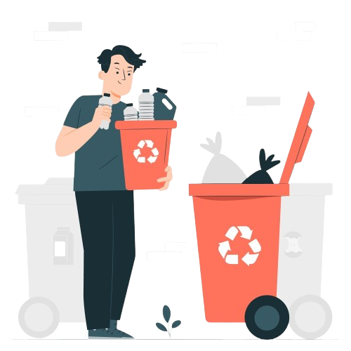
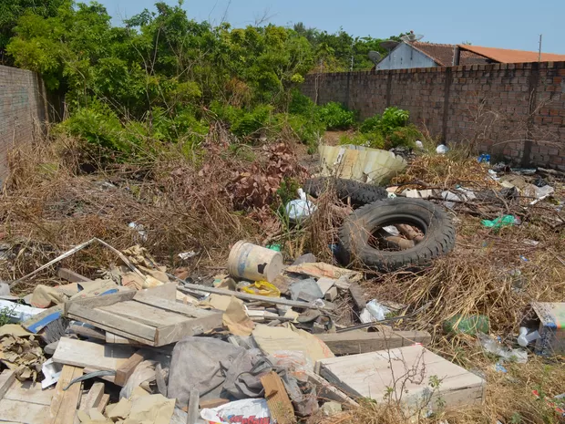
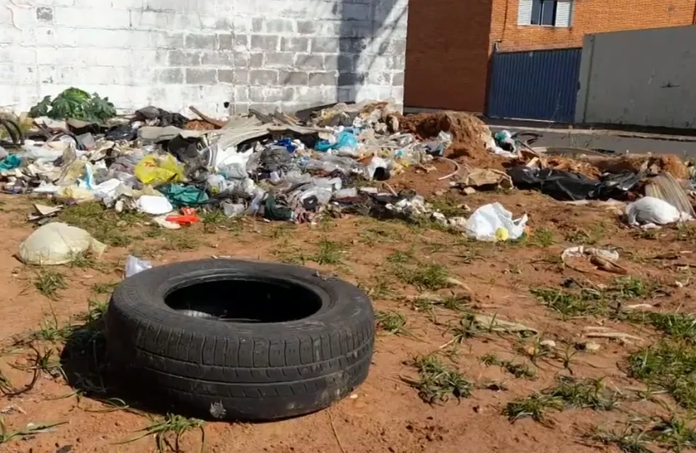

Ajude a deixar seu bairro mais limpo de um jeito simples e eficiente
Nosso projeto visa transformar áreas urbanas e rurais abandonadas em espaços agradáveis, limpos e seguros, criando novas utilidades para a comunidade e inspirando uma cidade mais acolhedora e sustentável. 🚀🌱
Nosso compromisso é mapear, recuperar e revitalizar terrenos baldios, transformando esses espaços esquecidos em áreas seguras, limpas e cheias de vida. Acreditamos que cada espaço abandonado pode se tornar um ponto de convivência, lazer e bem-estar, contribuindo para uma cidade mais harmoniosa, sustentável e acolhedora para todos. 🌱🏙✨
Trabalhamos incansavelmente para gerar um impacto positivo e duradouro nas comunidades. Nosso objetivo é criar soluções transformadoras que revitalizam espaços urbanos e rurais, promovem a qualidade de vida e incentivam um futuro mais inteligente, inclusivo e agradável para todos. 🌍✨🏡
Terrenos abandonados são um grande problema nas cidades, acumulando lixo, atraindo pragas e contribuindo para a proliferação de doenças. Além de comprometerem a segurança, esses espaços degradados desvalorizam a vizinhança e impactam negativamente a qualidade de vida dos moradores. O abandono transforma áreas que poderiam ser úteis em cenários de risco, descaso e negligência urbana. 🚧⚠
 Por meio da combinação entre tecnologia e estratégias de marketing, desenvolvemos uma plataforma inovadora que permite à comunidade identificar, reportar e acompanhar a resolução de problemas relacionados a terrenos abandonados e espaços urbanos degradados. Nosso sistema conecta moradores, autoridades e agentes de transformação, criando uma rede colaborativa que agiliza a recuperação dessas áreas.🚀📍🏙
Os moradores têm um papel fundamental na transformação da cidade! Através do nosso site, eles podem enviar denúncias detalhadas sobre terrenos abandonados e áreas degradadas, anexando a localizações para facilitar a identificação do problema. Além disso, podem acompanhar todo o progresso da denuncia em tempo real, desde a análise do caso até a sua resolução, garantindo mais transparência, participação ativa e um impacto positivo direto.📢🏙✅
Menos focos de doenças, bairros mais seguros e uma cidade mais valorizada! A revitalização de terrenos abandonados traz inúmeros benefícios, como a redução da proliferação de pragas e enfermidades, o aumento da segurança nas ruas, a valorização imobiliária e, acima de tudo, a melhoria da qualidade de vida para todos.✨
Você pode doar, divulgar ou se tornar voluntário para ajudar na causa.